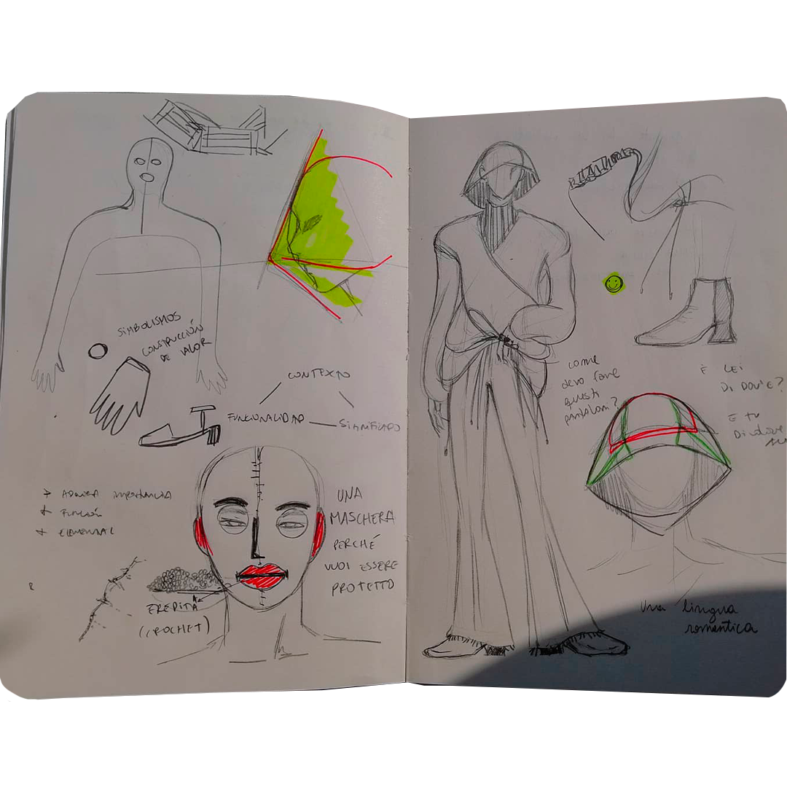
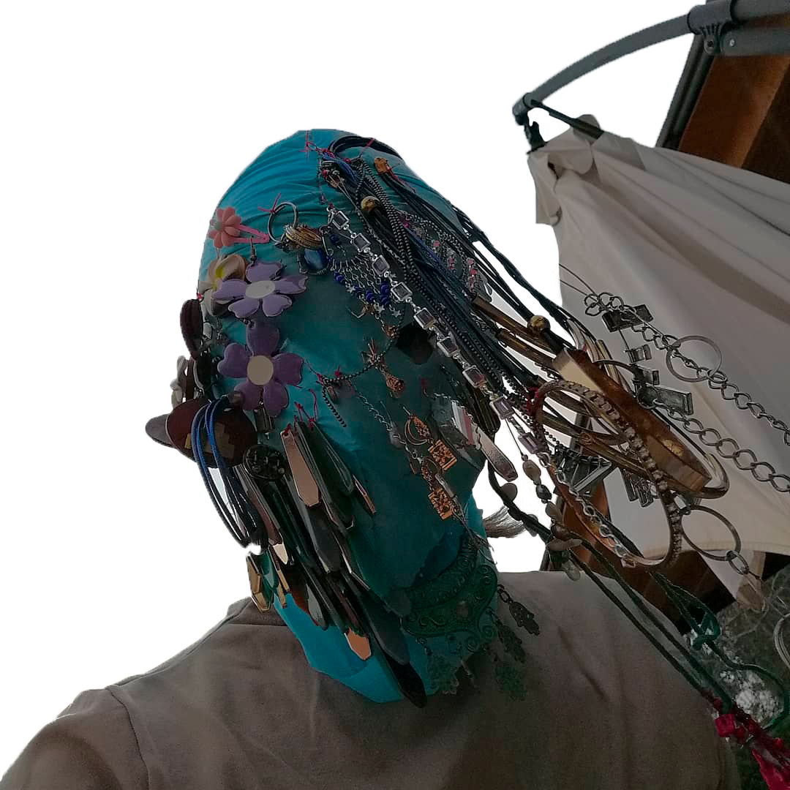
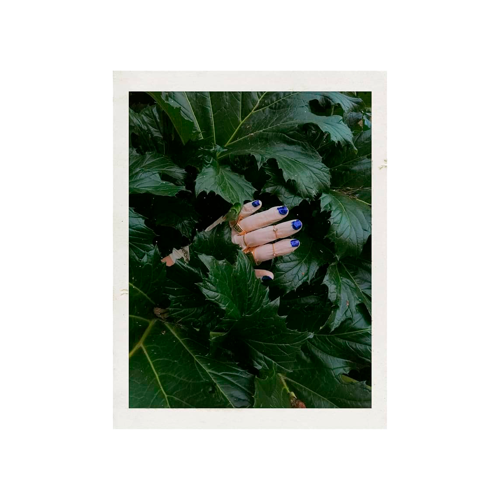
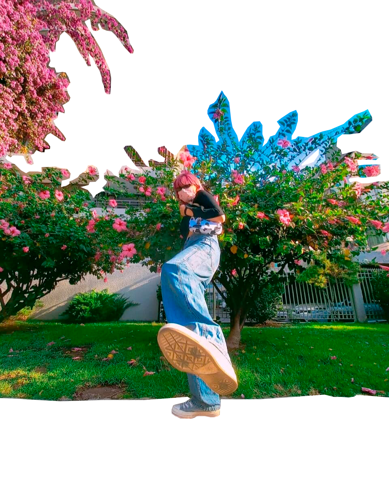
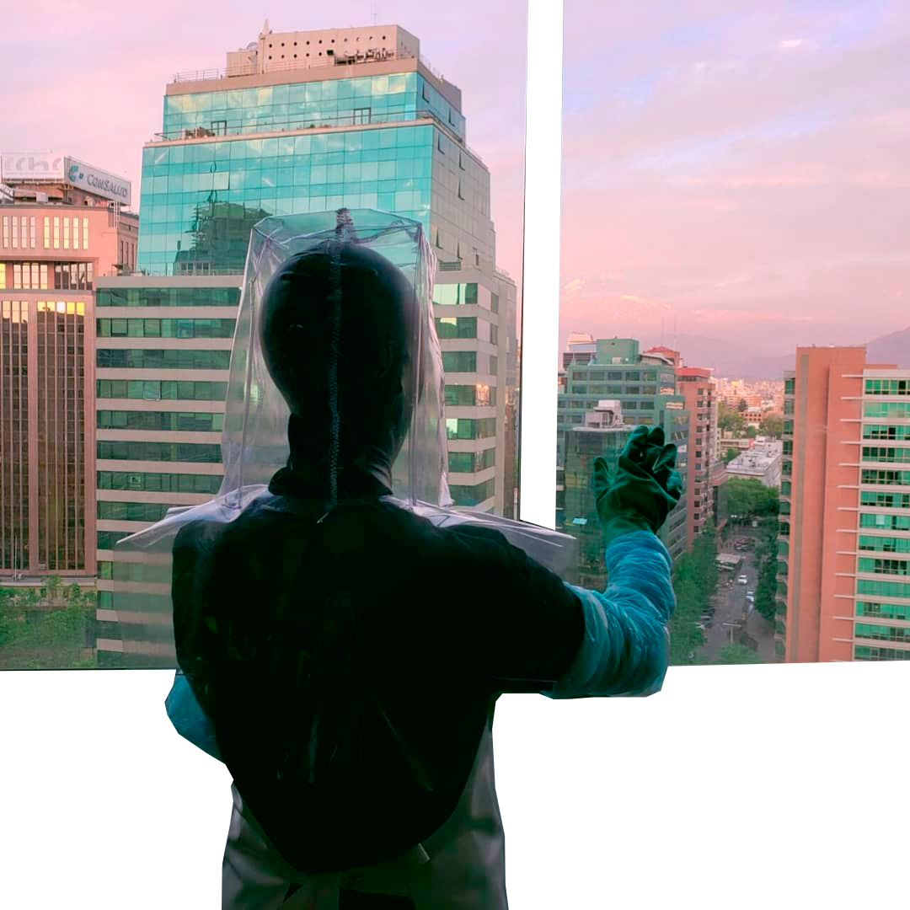
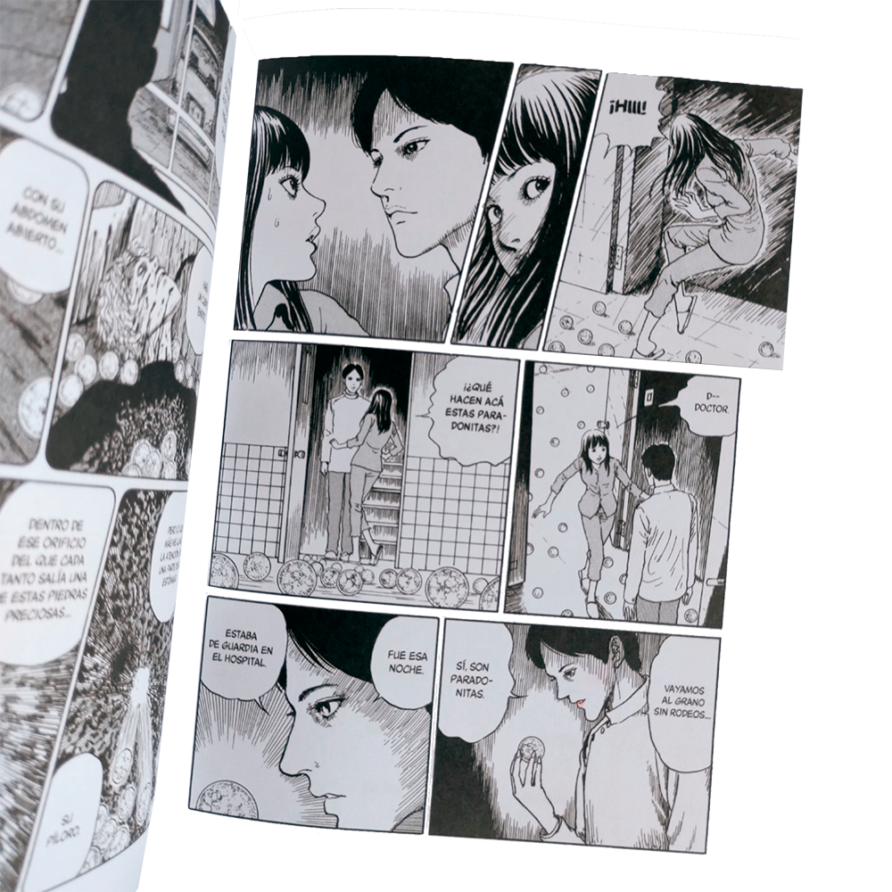
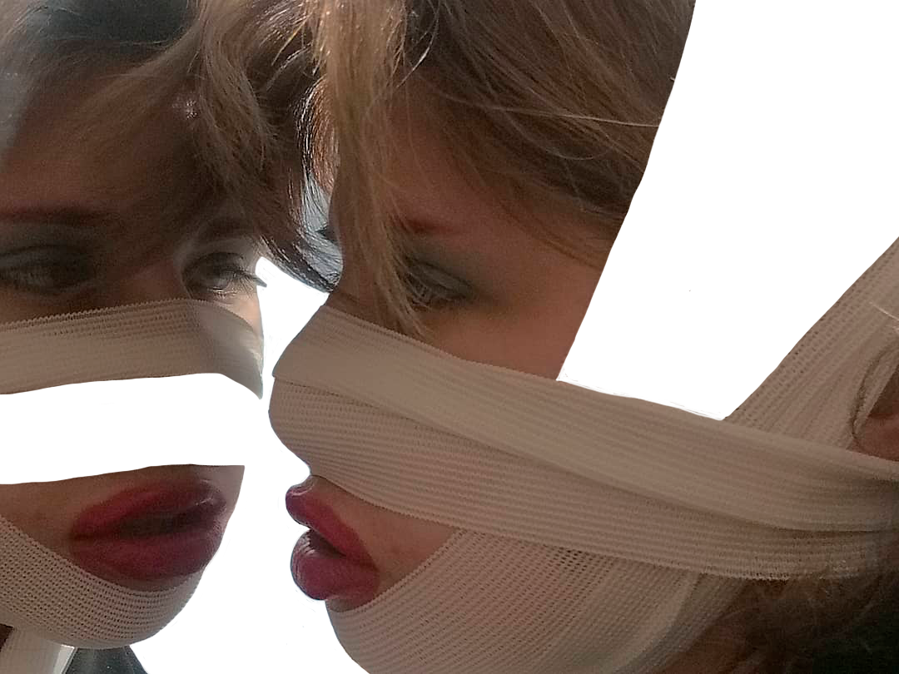
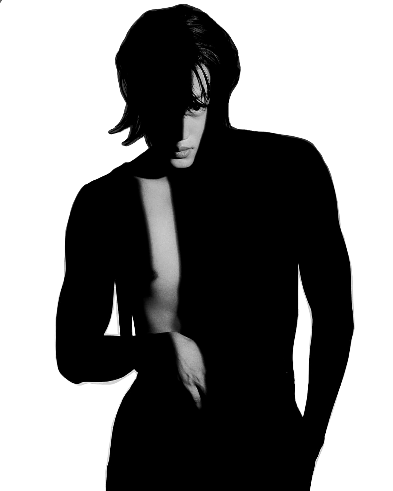
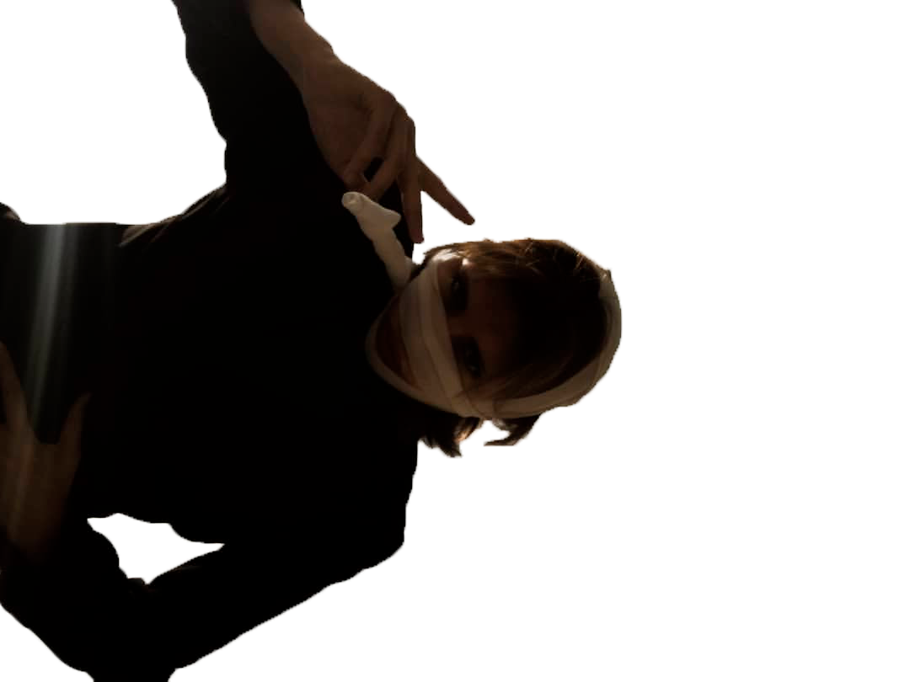
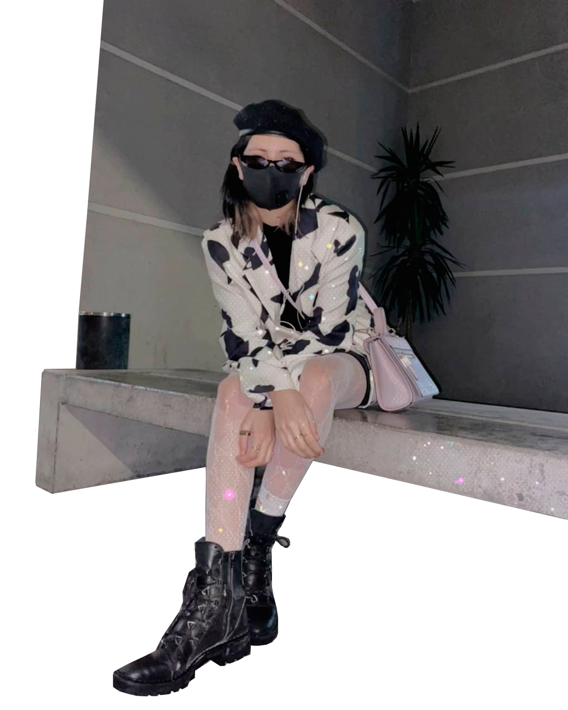

Me asomé por la barandilla; allá, a lo lejos y por la costa, las vi paseando. Cerradas, por supuesto que cerradas, pero qué hacían bañándose cuando estaba tan nuboso y acababan de beber el agua que había encargado para ellas. Con cubos de azúcar y tres gotas de limón, ni una más, ni una menos.
"¡Maleducadas!" les grité a todo pulmón, con tal fuerza que las nubes despejaron con abrumadora rapidez, como asustadas con mi arrebato. El sol salió brillante, y las desgraciadas, allí mismo con los pies al mar, florecieron.

Aquí-allá
Finge.
Un regreso a-
ㅤㅤ
Mercurio, Venus, Tierra.
ㅤㅤ
Es un trance, un momento—siempre se trata de un momento. No habría peor ocasión, fiesta nocturna de apariencia y ron en las rocas en nombre de Fendi, del cuál se limitó a tan solo asistir y fingir fatigado. Sutiles guiños, labios rasgando una sonrisa, mejillas tensas, quijada apretada. Hasta cuándo, la pregunta, que sigue rezando a-
ㅤㅤ
Marte, Júpiter, Saturno.

Alterego
⌟
Quiero contarte que el sol aquí es perfecto, tan brillante y caluroso que me preocupa un poco el tener que abandonarlo... pronto, muy pronto. También quiero contarte que aquí los dulces saben mejor, se quedan más tiempo en tu lengua y el castagnole de Panarello es inolvidable.
Lo admito, quizá estoy muy cesgado y enamorado de estas calles de adoquines, paredes de sillares y alargadas finestre, tan distinto al movimiento usual que hay en la ciudad. Aquí se vive lento, y cuando te pierdes lo haces en cafés en vez de grises, las flores te saludan amarteladas y el viento te acaricia como una madre.

꿈에서 꿈
🌒
Estaba el tiempo de atraparse el reflejo en el vidrio, una mueca, de rascarse el lagrimal que ardió un poco porque se corrió el delineador. Le faltaba la guitarra, sí. Tiempo de manos entre muslos mientras la espera pendía de la cantidad de pestañeos que contaba, apoyado en la baranda dándole la espalda a la luna.
Así de nervioso era, a veces, con el ruido taponado tras la ventana y, por fin, el corporeo blanco cerraba tras suyo tan rápido como se hacía parte de ese espacio. No había llave pero estaba bien, la cortina se convertiría en su muralla intrascendente, intraspasable, la que les brinda lo invisible (y lo secreto).

뛰고 웃고 울고 그녀는
🔴
Y apúrate, perro
Que se hace tarde
Para gritar, romper, matar
Esa mosca, la infeliz,
El desgraciado, de por allí
Y nos reímos en su cara, y le tiramos una piedra
Para salir corriedo,
Dinámico, excéntrico, maniático
Reímos
Y al caer la noche, maldita noche
Apúrate, narciso
A sentarnos más allá, en la vereda
En el frío, del cemento duro
A contar historias, y fumar cigarros
A desatar cordones, y escupirle al cielo.

🌕
Welcome, 2020
Sus displicentes ojos lo observaban todo; capaz de crear pesadillas corpóreas, poseía una imaginación inusitada que se derramaba como el agua por la punta de sus dedos, vertientes de congoja suprema para quien osara molestarlo.
Seres de menor rango caerían de rodillas a sus pies, pidiéndole perdón pues pocos sabían lo que yacía en su interior; concedería misericordia con gracia y, disgustado de ensuciarse, aborrecía aquellos cuerpos bañados en su propia inmundicia de la ignorancia.

伊藤 潤 二
╺
Es un eco a un mal beso, a picazón sobre la piel, perturbación del estado, la estrechez imaginaria de la ropa que le viste. Es la réplica del extraviado, deambulante de angostillos, observador estático del movimiento y el sonido, risas, gritos.
Testigo del tiempo devorando el azul, tragando en naranjos y digiriendo con negros.
Una bofetada arde en su mano por ser golpeada, está caliente, tan ardiente como el rojo al que transmuta—es un grito de odio, un arranque de cabellos, y qué esperas, márchate, lárgate de aquí, conviértete (irónicamente) en el escupitajo de un distrito con dientes de oro y diamantes en los ojos.

Narciso
Apúrate, velocidad
Descontrol, así se hace
Este poema, un mal poema
Para el impulsivo
Rápido, apúrate, vamos allá
Y ven para acá
Ven, a ahogarte aquí
A nadar desnudo, a tirar piedras
A ventanas
si le cae en la cabeza
Mala suerte
Y si se rompe un dedo
Mala suerte
Porque así se hace, rápido, fugaz
Dinámico, excéntrico, maniático.

MMMH
╳
Calada tras calada quemaba otoño entre sus dedos y el atrevimiento de la costumbre le permitía estar un paso más cerca, cuando el hielo se rompía y declaraba la más inusitada gentileza.
Tantos frescos la pregunta pendía justo punta en lengua, punzante, asustadiza; ¡ahora, palabras, dispara! y escuchó-

🌗
both
Su mera existencia revoloteaba alrededor de ironías y verdades cruentas—pues era el más vivo entre los muertos. El aroma a azufre se impregnó en su nariz desde nacimiento, junto con el de peonías tristes y maltrechas, negras en toda la extensión de su jardín.
Su nombre no sería el de un ser poderoso ni estaría rasgado en tinta, manchando páginas, engendrando maldiciones; no, su nombre apenas sería escuchado, dicho en bocas mundanas, una mera formalidad perecedera.
Ni lo uno ni lo otro.

Moooooo
(...)
Eran esas gomas dulces, ácidas, un clásico que le arrugaba la cara mientras que recibía gritos de saludos, era el algodón deshilado para hacer de seda que se le enredaba en el tacón, y las apreciaciones del “¡gran disfraz, ese, es un gran disfraz!”.
La diferencia, también, se albergaba en el recuerdo imposible de olvidar; y ellos, por supuesto, tan distintos, tan iguales.